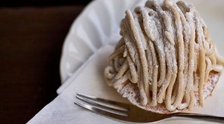

ピックアップスイーツ
今月のお勧めスイーツを二つ紹介します。
モンブラン
今年採れた国内産の栗を使用s採れた国内産の栗を使用したケーキです。

マカロン
沖縄産の砂糖を使用したマカロンです。
伝統と素材にこだわった季節のフルーツを使用したきせつの使用した季節のスイーツのお店です。

今月のお勧めスイーツを二つ紹介します。
今年採れた国内産の栗を使用s採れた国内産の栗を使用したケーキです。

沖縄産の砂糖を使用したマカロンです。